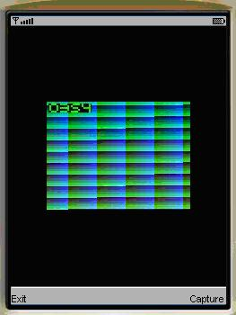
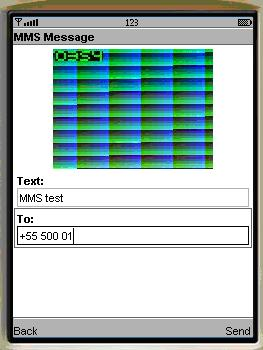
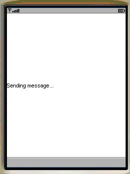
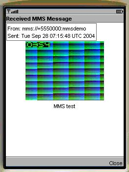
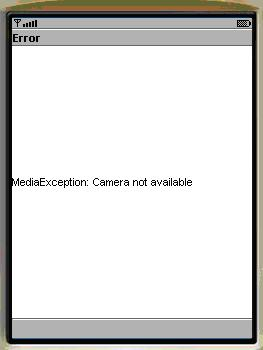
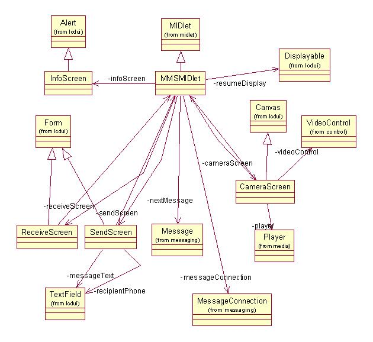

This simple example demonstrates the implementation of a messaging application that exchanges MMS messages using the API defined in JSR-205. With the example MIDlet, the user can capture an image then send this image along with an accompanying textual note as a multimedia message to a given phone number. Received messages are displayed on the screen. This midlet also supports push registry. It implements static push. When a MMS message arrives during the time that the midlet is not running, the midlet can be woken up by the push registry, and displays the message sent by the push registry on the receiving screen.
The example makes use of the standard MIDP application framework. The reader should be familiar with the standard MIDP application framework before attempting to understand this example. Familiarity with SMS capabilities of Wireless Messaging API is recommended as well.
The example is built using the standard method for building and running as described in Building and running the examples.
The following classes should be included in the jar:
com.nokia.midp.examples.mms.*
On the sending end, when the user starts the MIDlet, the following screen allows the user to take a photo.

After the user clicks on the "Capture", the following screen appears which provides a form containing two fields used to compose the message. After composing the message, the user can click on "Send".
The following screen displays "Sending message" appears after the user clicks on the "Send".
On the receiving end, after the user starts the midlet, the message is simply displayed on the screen immediately on arrival. By pressing "Close", the user can return back to previous screen.
In case of error, for example, if the camera has been reserved by another application, an error message is displayed.
A UML class diagram for the MMS MIDlet is shown below.

This example illustrates the implementation of a simple application that sends MMS messages using the API defined in JSR-205.